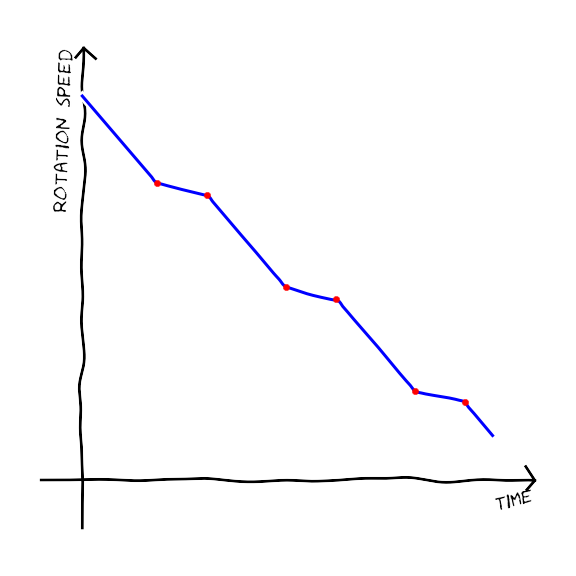
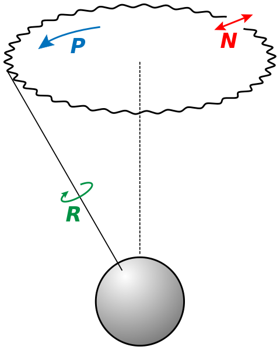
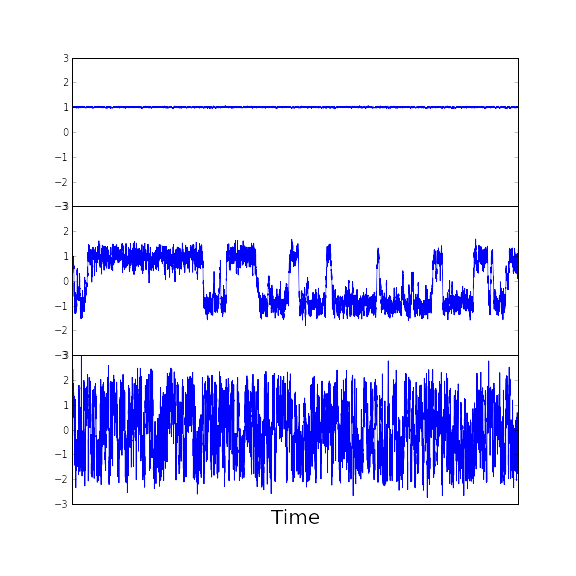
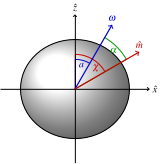
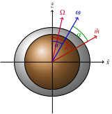

A neutron star model to
evaluate theories for timing noise
A noisy elephant in the room
The obligatory: What is timing noise?
Unmodelled structure observed in the timing residuals:
$ \delta T = TOA_{\textrm{model}} - TOA_{\textrm{observation}} $
Three examples timing residuals

Image from Hobbs, Lyne & Kramer 2010.
Two well founded but conflicting ideas on the origin
1) Periodic and instantaneous changes in the spin down rate
Lyne 2010 found periodic switching in both the beam signal and spin down rate.

2) And don't forget precession...

Possible solution..

Modelling a neutron star part I.
First attempt to model an elastic fluid acted upon by an electromagnetic torque
Equations of motion are 3 coupled ODEs
$ I\dot{\boldsymbol{\omega}}+\boldsymbol{\omega} \times (I\boldsymbol{\omega}) = \boldsymbol{T}_{EM} $
$ \left[\frac{d}{dt}\boldsymbol{J}\right]_{inertial}= \boldsymbol{T} $

Summary of results
Modelling a neutron star part II.
Add in a spherical fluid core coupled frictionally to the shell
${T}_{diss}=K(\boldsymbol{\Omega} - \boldsymbol{\omega}) $
$I_{s}\dot{\boldsymbol{\omega}}+\boldsymbol{\omega} \times (I_{s}\boldsymbol{\omega}) = \boldsymbol{T}_{EM}+\boldsymbol{T}_{diss} $
$I_{c}\dot{\boldsymbol{\Omega}}+\boldsymbol{\omega} \times (I_{c}\boldsymbol{\Omega}) = -\boldsymbol{T}_{diss} $
